Marsella, Colombia
Aquí comenzó una vida que atravesaría países, generaciones y décadas.
Una vida recordada con amor
1 de mayo de 1934 — 9 de junio de 2026
Amada madre, abuela, hermana y tía. Siempre vivirás en nuestros corazones.
Conocer su historia ↓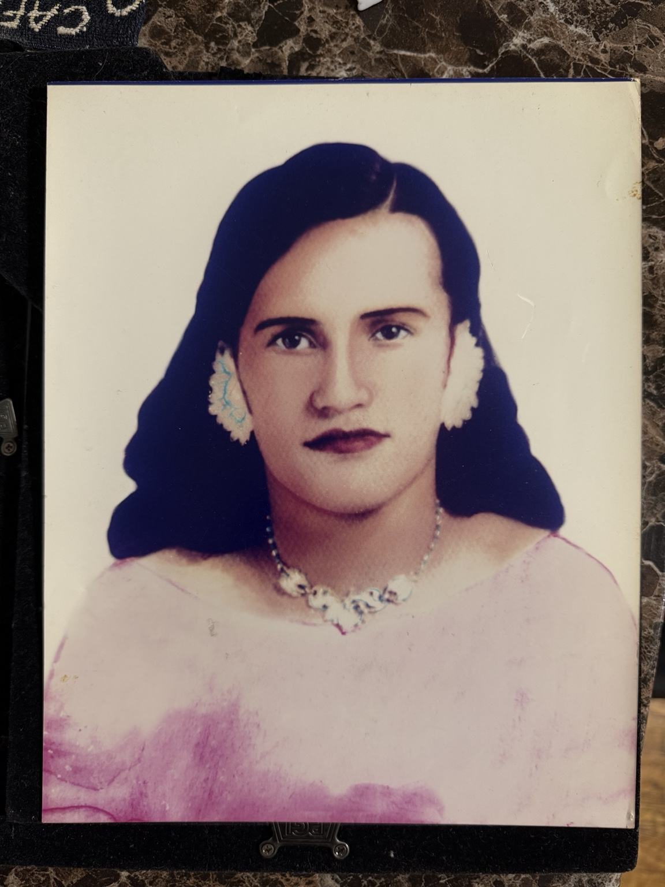
Su historia
Dedico esta página a la mujer que superó todo lo imaginable para salir adelante. Mi abuela fue una mujer ejemplar de fortaleza, de orgullo y, más que todo, de amor y cariño. Todo lo que le echó la vida, mi mamita lo enfrentó sin miedo.
Nació el primero de mayo de 1934 en Marsella, Colombia. Durante su niñez recogía algodón a mano junto a su madre, quien también la crió sola. Estudió hasta la escuela primaria, tuvo a su primer hijo a los 14 años y a su quinta y última hija a los 26.
Después de criar a sus hijos casi sola, emprendió otra vida. Llegó a Nueva York en los años setenta, después de los 40, y volvió a construir desde cero. Su historia no fue sencilla; por eso su familia recuerda no solo lo que logró, sino la fuerza con la que lo hizo.
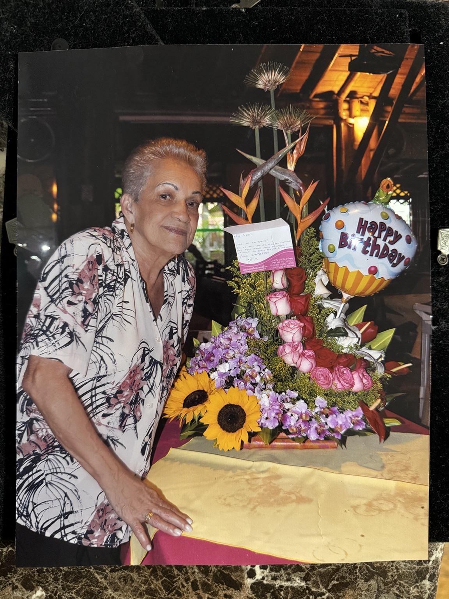
A través de los años
Aquí comenzó una vida que atravesaría países, generaciones y décadas.
Criar, trabajar, resistir y seguir. La familia siempre al centro.
Llegó después de los 40 y comenzó de nuevo, con la misma determinación que definió su vida.
Cumpleaños, escuela, paseos y días comunes: la vida familiar se construyó a su alrededor.
Viajes, familia y el regreso a un país que nunca dejó de ser parte de ella.
Su presencia terminó; su influencia no.
Mi Mamita y Yo
De bebé en sus brazos a adulto a su lado. Una historia dentro de la historia.
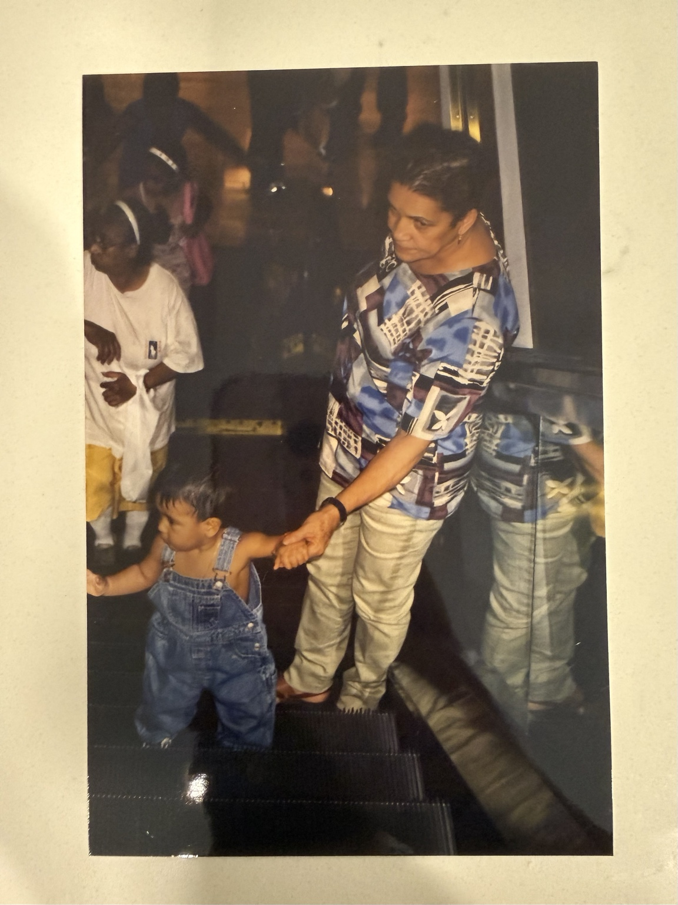
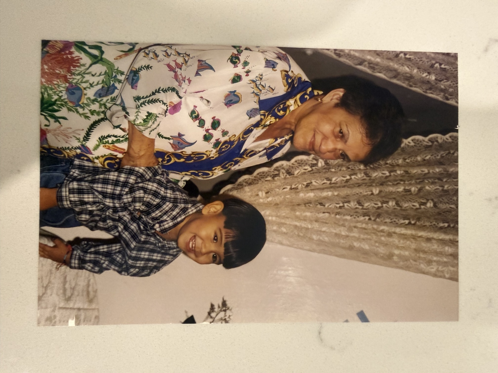
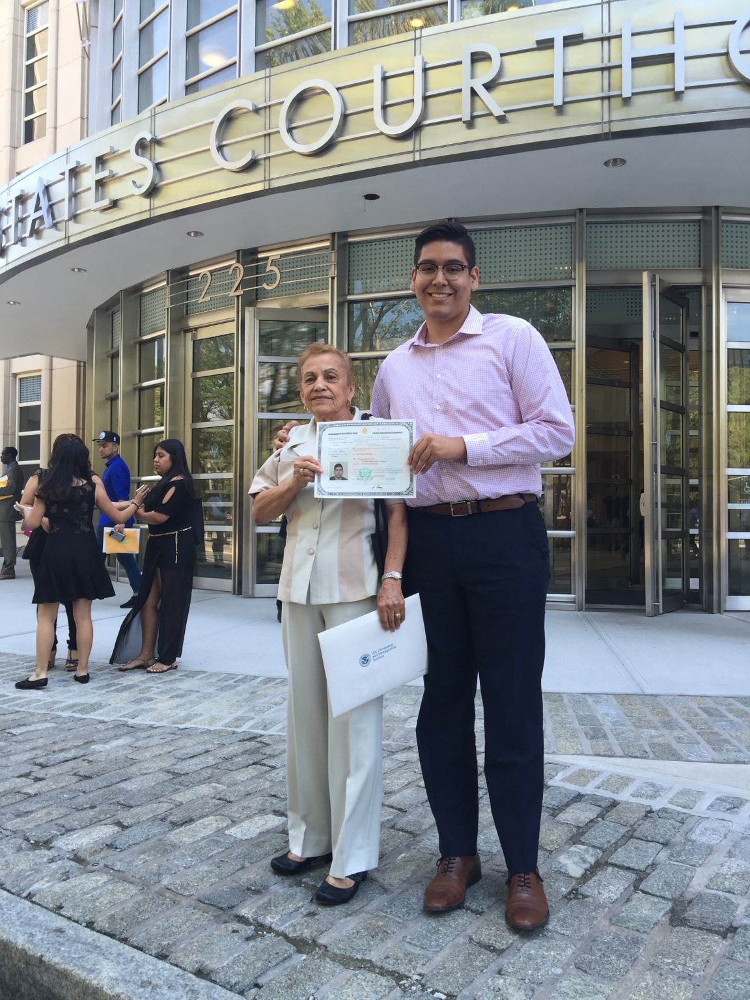
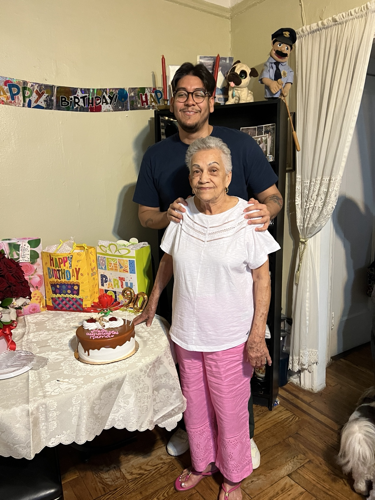
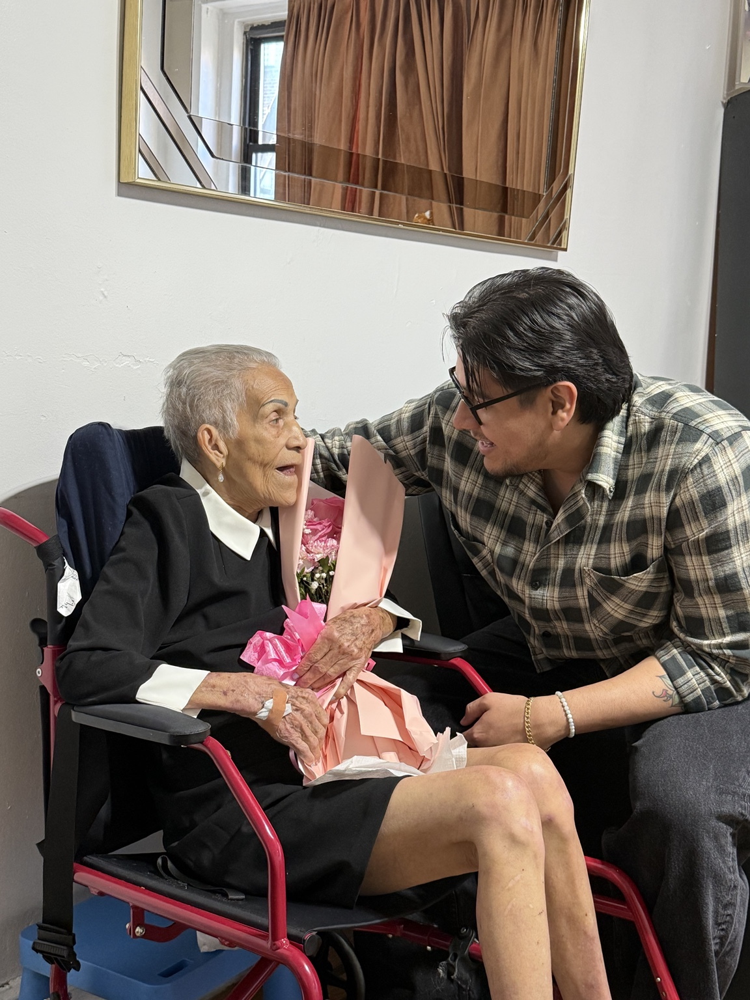
Colombia
Niño
Niño compartió la casa, los paseos y los días comunes con Mamita. Estas pequeñas escenas también forman parte de lo que una familia recuerda.
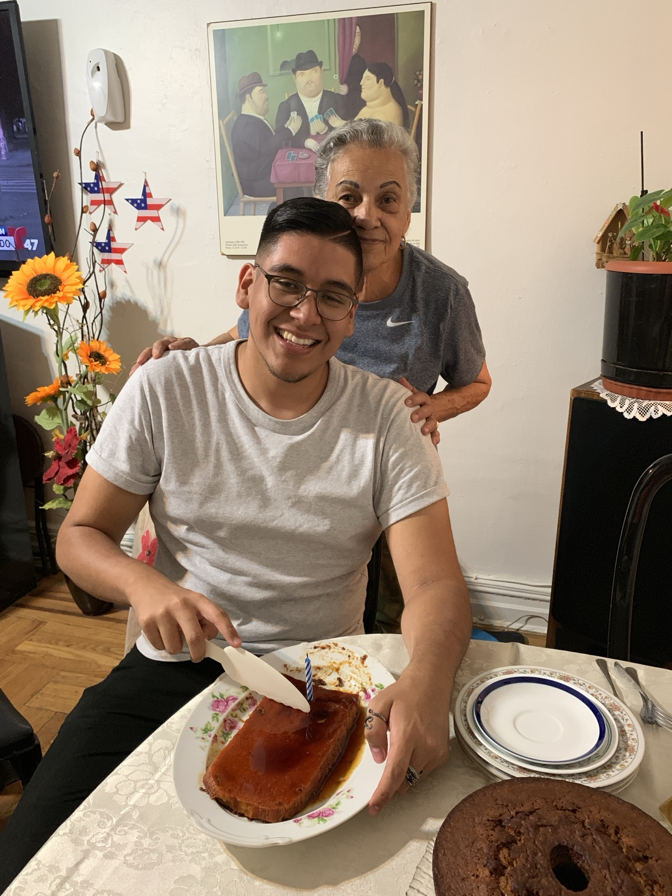
Su legado
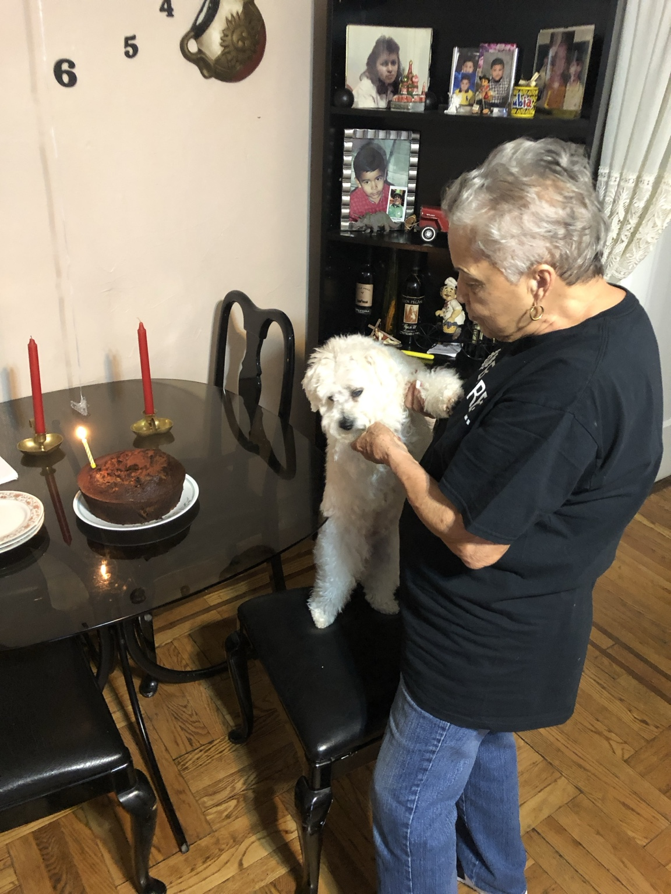
Gracias por tu amor incondicional, tu fortaleza, tus enseñanzas y los hermosos recuerdos que nos regalaste. Tu presencia permanecerá para siempre en nuestros corazones y tu legado vivirá en cada una de las vidas que tocaste.
— Familia Montaño
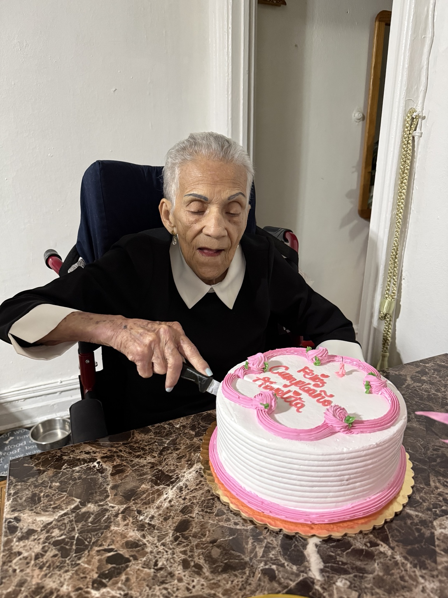
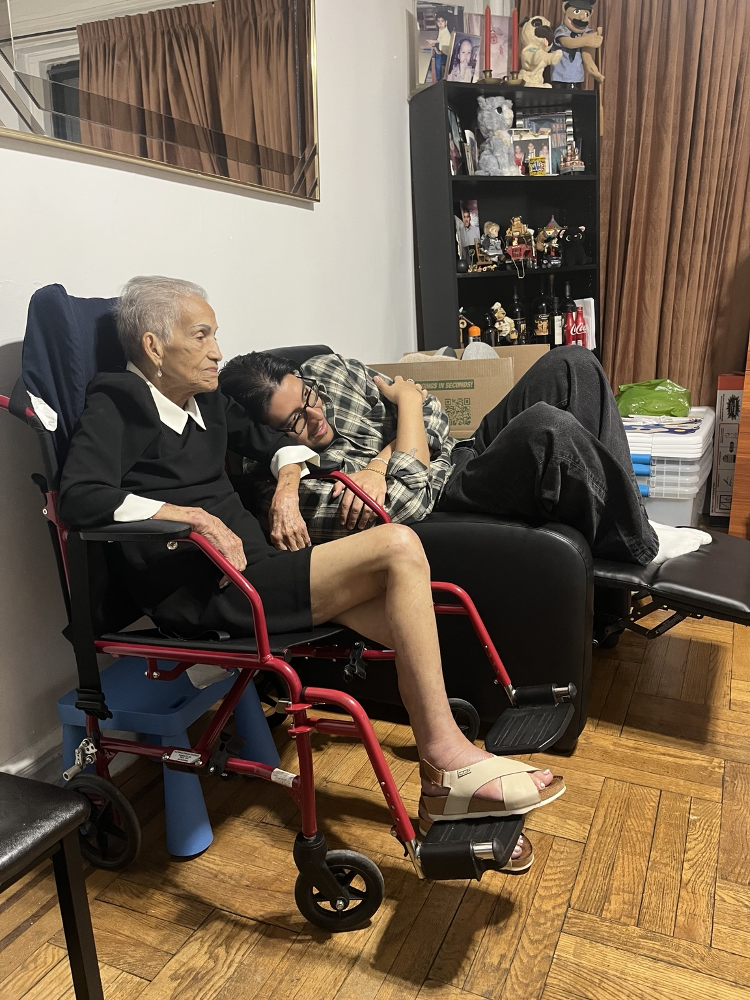
El último capítulo
Sus últimos meses no definen su vida. Pero también fueron parte de ella: acompañada, celebrada y sostenida por quienes la amaban.
En memoria
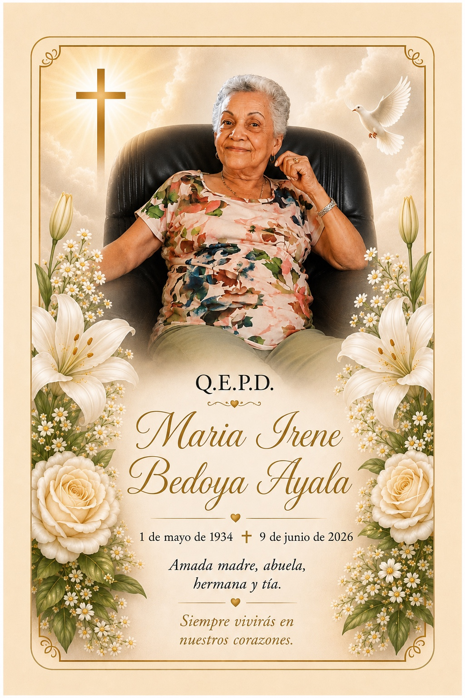

Dale, Señor, el descanso eterno, y brille para ella la luz perpetua.
1934 — 2026
Siempre te recordaremos con amor.